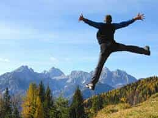

< < < Back
Studies Reveal That Walking Is A Surprising Way To Reduce Post-Workout Soreness – Return Of Kings
Anybody who does any sort of resistance training, particularly those just starting out with a fitness regimen, will tell you that one of the worst things about it is the muscular exhaustion and soreness the morning after: while I do love that first rush of dull pain to tell me that I did a good job yesterday, it does make going about your day to day business a bit harder than it normally would be.
Most people likely don’t have the slight masochistic streak that I do, and would much prefer reducing their soreness. As it turns out, there is a way, and it is one that I discovered purely by accident.
A Story From College
As a young man in college, being away from my parents for the first time, I had a fair amount of free time, most of which I spent either working out or attempting to sleep with every woman in the county (as a side note, I learned much of women and sexuality from the “school of hard knocks”, which is why I must admit that I do not have any sort of story about Return Of Kings giving me some great epiphany about women).
This was around the same time that I decided to reduce my masturbation, for reasons that have already been discussed on this website, so after playing the field for a month or two, my Saturdays solidified into a wonderful and idyllic routine: after breakfast and washing up I would finish my homework or reading for the upcoming week in the morning, play some saxophone or do some other recreation, then go to the gym, shower, eat lunch, do some reading or another recreational thing, then shack up with one of my four regular girls for the evening.
Every one of those girls lived off campus, 1-2 miles away from my dorm, a distance that I almost always walked. While the constant walking in addition to formally scheduled exercise, both combined with the calorically reduced diet I was eating (as detailed in one of my earlier posts) made me drop more than 30 pounds in the span of about two months and gave me a trim and lean physique that the women in my life could barely keep their hands off of.
What I didn’t expect is that the morning after I would barely be sore and be much more functional, capable of going about my business with a spring in my step and without any soreness at all.

What Happened
As excited as I was to finally be having sexual intercourse on a regular basis—I freely admit that I did not lose my virginity until my sophomore year in college—I doubted that that was the reason I had reduced soreness. So I reasoned that, perhaps the 3 miles I had intermittently walked after going to the gym had something to do with it.
As luck would have it, research has confirmed that this was indeed the case…sort of: More accurately, any sort of light, sustained aerobic physical activity (like walking or stretching) after a shorter bout of heavy anaerobic training (such as sprints, weightlifting, or hitting a punching bag) can reduce soreness a great deal:
A study published in 2011 analyzed whether stretching before or after heavy physical activity would be a more effective way to reduce soreness. The results showed that there was a statistically noticeable difference in each, with pre-exercise stretching reducing “next day” soreness by, on average, half a point—“points” were defined purely by perception by the test subjects on a 100 point scale. Post-exercise stretching reduced soreness by a full point. The results seem to indicate that while post-exercise physical activity reduces soreness more than pre-exercise stretching, stretching in general does not produce a huge reduction in soreness.
And, admittedly, I could not find any academic data specifically on taking a long-distance walk (defining long distance walk as anything longer than 1 mile). So instead, I looked for information on fitness websites—and, in the style of Mike Cernovich, I found the information I was looking for, from “bros” who were more knowledgeable than the men in labcoats:
Livestrong.com, isatori.com, builtlean.com, Bodybuilding.com, and even HuffPo all agree that a bit of light cardio is a great way to reduce muscular soreness. And if the SJWs of Huffington Post and the Racist Bodybuilders For Trump can agree on something, you might be behooved to give it a try.
Read More: How To Work Out Correctly